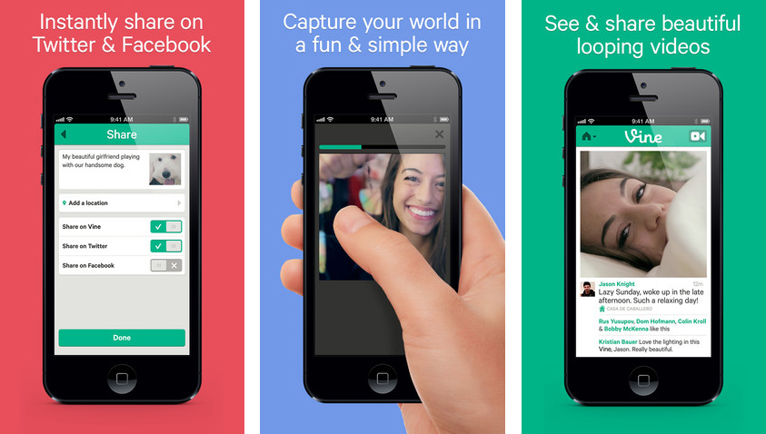

Vine
Vine
és una aplicació que permet crear i publicar vídeos de 6 segons com a màxim en fomra de "loop" (bucle) que poden ser compartits a través de Facebook o Twitter. La aplicació
va ser creada per Don Hofmann, Yusupov Rus i Colin Kroll el juny del 2012 i
comprada per Twitter el mes d'octubre del mateix any amb una inversió de uns
30 milions de dòlars.
Va ser
llençada oficialment el 24 de gener de 2013 inicialment per a iOs i desde el 3 de juny per a Android, Vine està traduida a més de 26 idiomes.
Funcionament
Els vídeos de Vine es poden grabar tant amb la càmera frontal del dispositiu com amb la posterior i només quan la pantalla s'està tocant. D'aquesta manera, els usuaris poden crear efectes varis en els seus vídeos. El més frqüent es el dit "stop motion" que consisteix en la animació d'un vídeo fotograma a fotograma. A més es va incluir l'apartat de missatges directes, amb els que els usuaris poden conversar de fomra privada ja sigui en forma de text o "vine".

Funcions i Aplicacions
Amb el Vine pots fer vídeos molt originals i divertis amb o per als teus amics. I compartir amb el món alguns moments molt bonics.